Legend
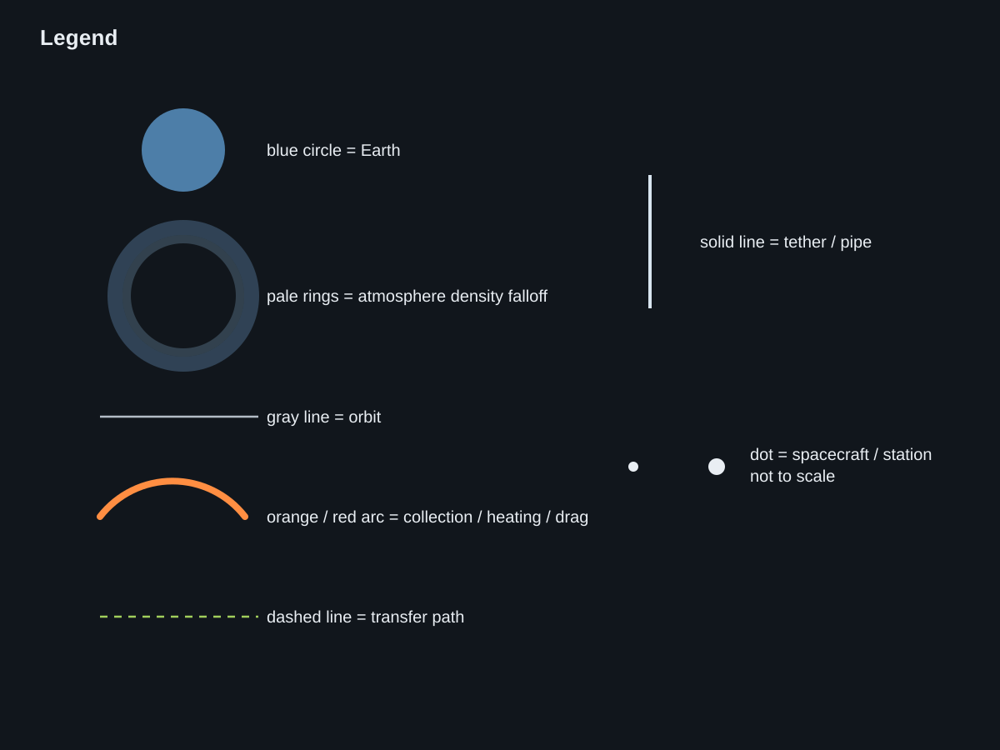
Visual key for the schematic conventions used across the set.
Source: original legend / no external source
Standalone schematic SVG diagrams generated for atmospheric scoop architecture concepts.

Visual key for the schematic conventions used across the set.
Source: original legend / no external source
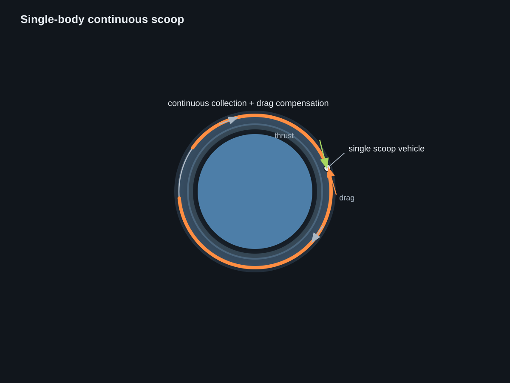
Baseline PROFAC-style scoopcraft: one low vehicle collects while thrust continuously offsets drag.
Source: Demetriades PROFAC (1960); VLEO propellant collection feasibility
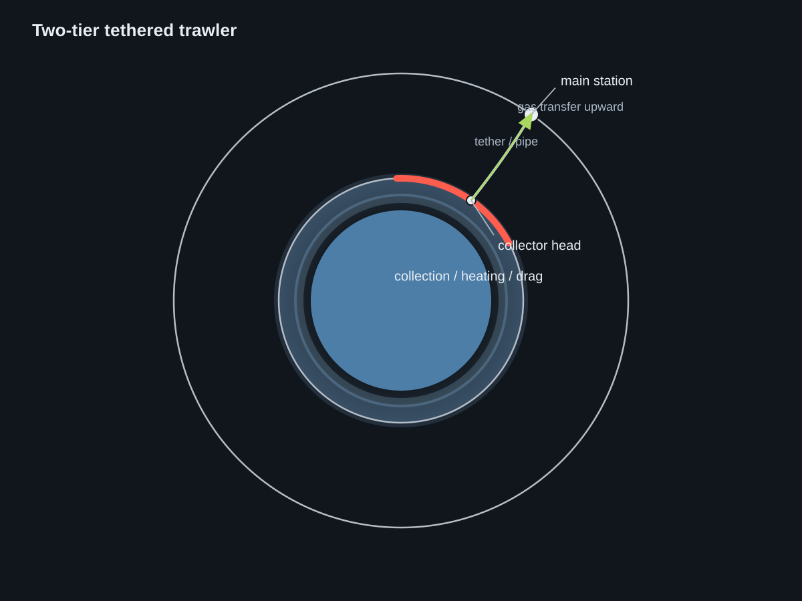
ToughSF’s trawler split: a hot low collector feeds a higher safer main station through a tethered link.
Source: VLEO propellant collection feasibility; LEO propellant collection review
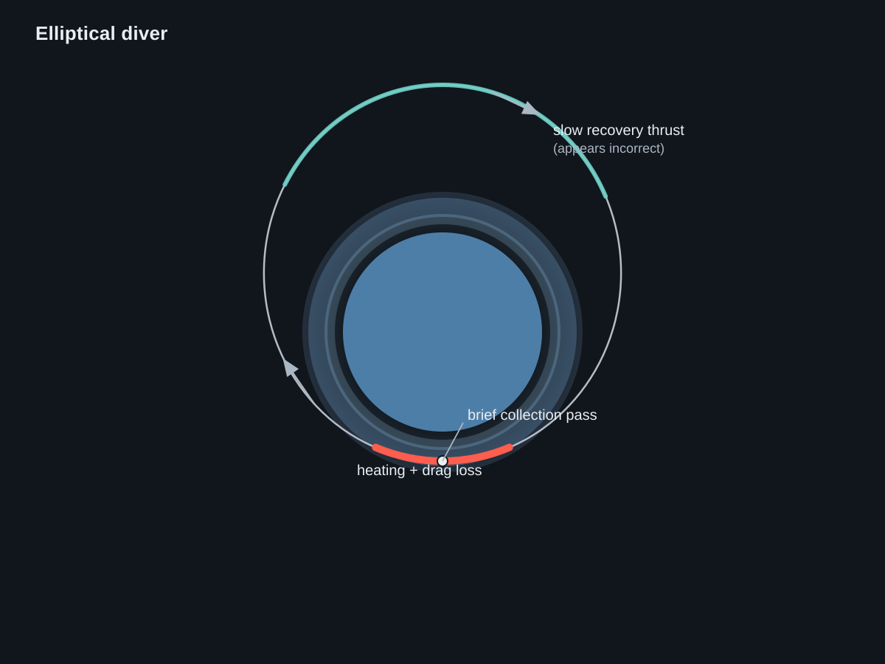
ToughSF’s diver shows apogee-side recovery thrust, but thrust that changes the low point of the orbit should be applied near perigee instead.
Source: VLEO propellant collection feasibility; LEO propellant collection review
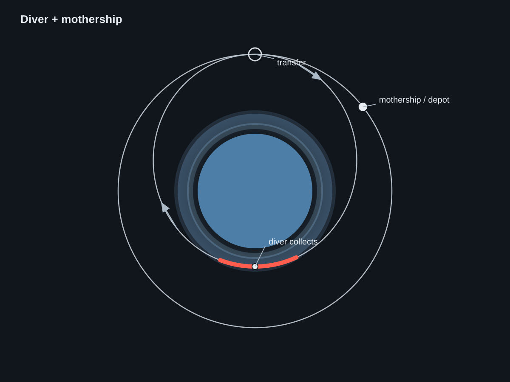
Derived hybrid: a diver makes the hot pass, but its period differs from the mothership unless it waits for later rendezvous or uses aerodynamic control.
Source: PROFAC precedent; PHARO abstract; LEO propellant collection review
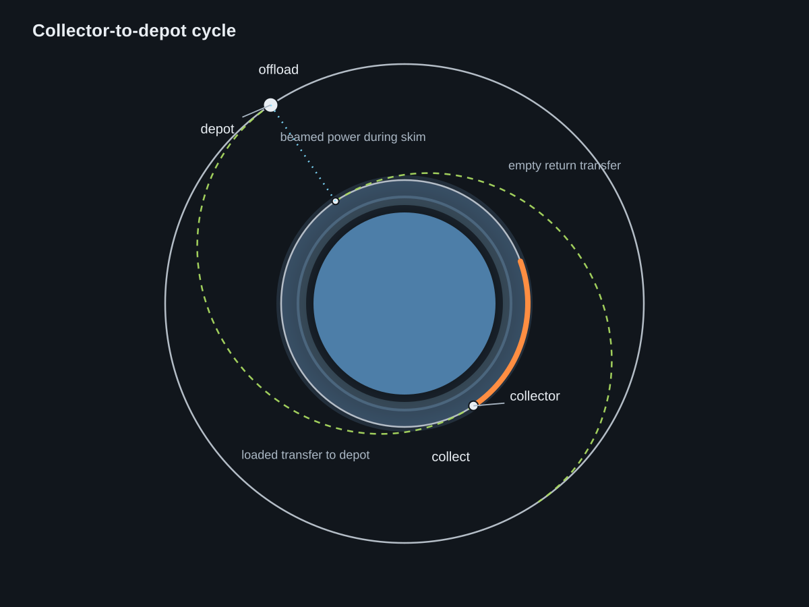
PHARO-like cycle: collect low, receive power from the high system, transfer loaded to a depot, offload, then return empty.
Source: PHARO abstract (2010); LEO propellant collection review
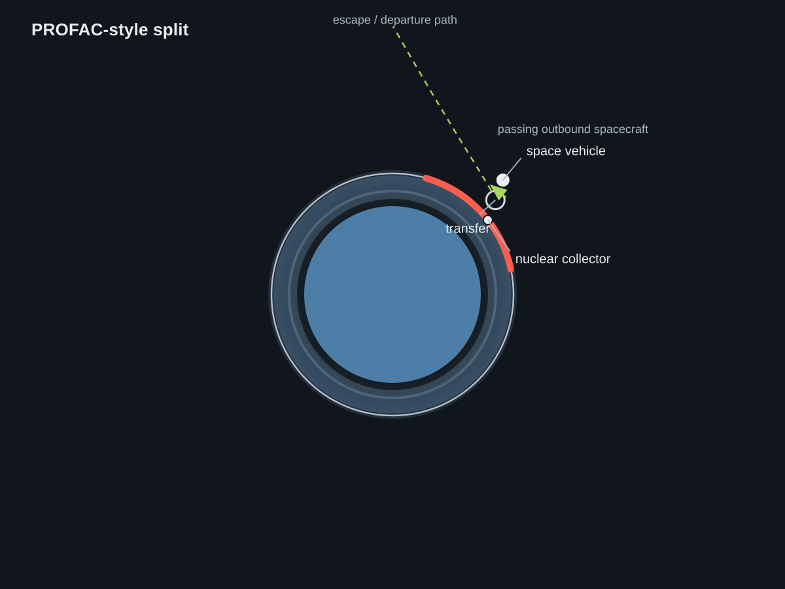
PROFAC split: a low collector transfers propellant to a passing outbound spacecraft rather than to a standing depot orbit.
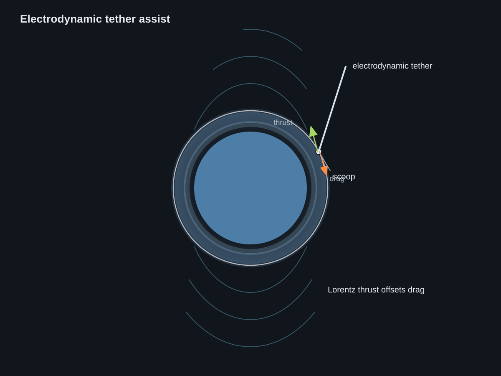
A tether-assisted scoop uses Lorentz thrust to counter drag instead of spending onboard propellant.
Source: Electrodynamic tether propulsion; technical paper; TSS lessons learned; Prox-1 demo
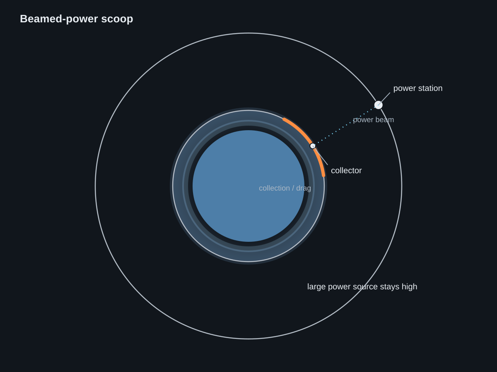
Derived remote-power variant: a high station beams energy to a low draggy collector.
Source: PHARO abstract
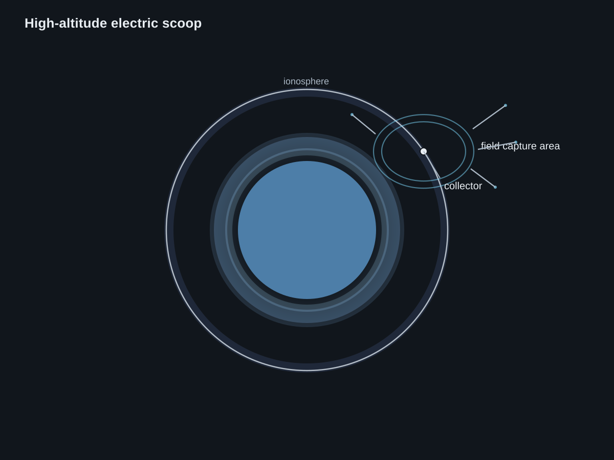
An electric scoop gathers ionospheric particles with a large electromagnetic capture area rather than a big funnel.
Source: Andreussi et al. ABEP review; ABEP intake / RF helicon thruster intake; ESA ABEP demo
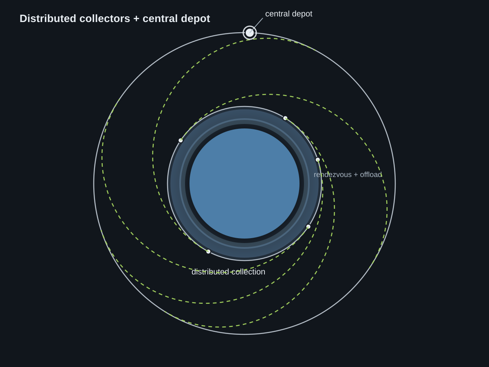
Derived depot network: many small collectors transfer to one shared higher depot.
PROFAC means Propulsive Fluid Accumulator: the older Demetriades concept in which a low atmospheric collector acts more like a self-filling orbital fuel station and can directly support a separate mission vehicle.
PHARO means Propellant Harvesting of Atmospheric Resources in Orbit: the later depot-oriented concept in which collector craft harvest low, then transfer propellant into a higher logistics and storage system.
Orbital design difference: PROFAC is closer to a low collector or collector-plus-space-vehicle arrangement, while PHARO is closer to a collector fleet plus higher depot architecture with externalized power and logistics.
Power difference: PROFAC is historically tied to onboard nuclear or plasma-power assumptions, while PHARO shifts the burden toward orbital infrastructure such as beamed power and distributed depot operations.
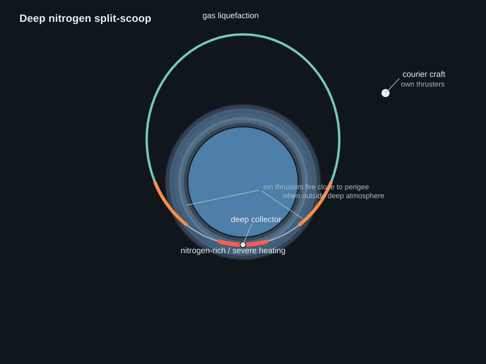
Original nitrogen-driven variant: a deeper hotter collector pass is split from the higher storage infrastructure.
Source: LEO propellant collection review; VLEO propellant collection feasibility; PROFAC precedent
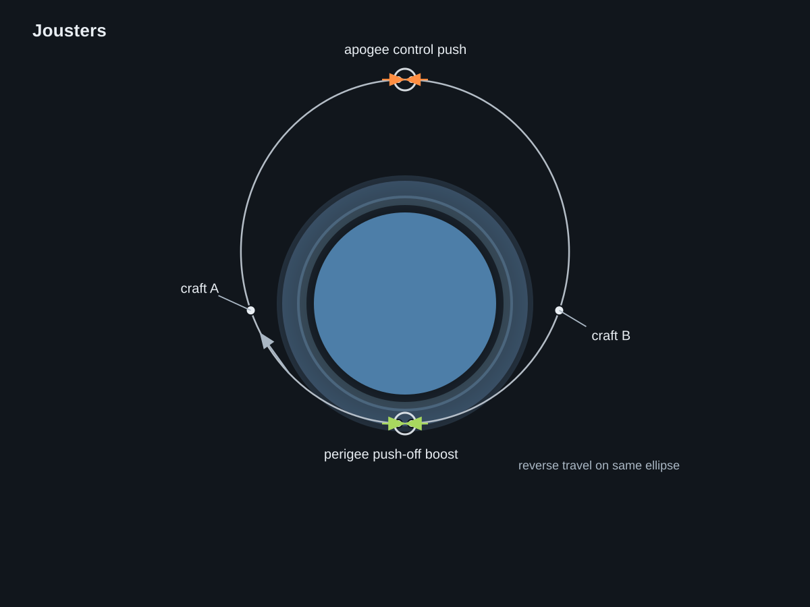
Original concept: two craft run the same ellipse in opposite directions and exchange push-off impulses at perigee and apogee.
Source: original legend / no external source